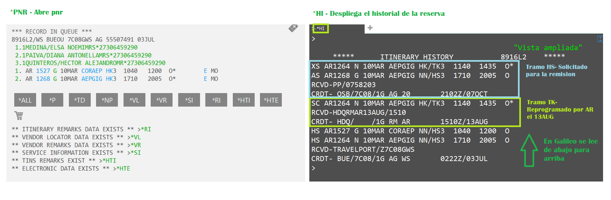
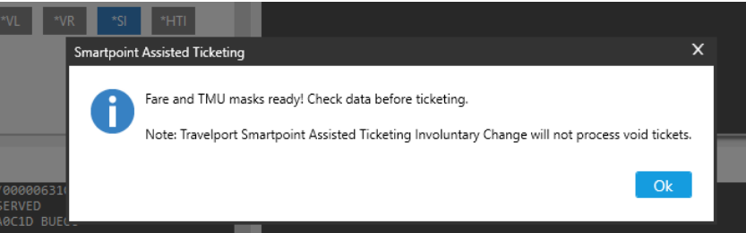
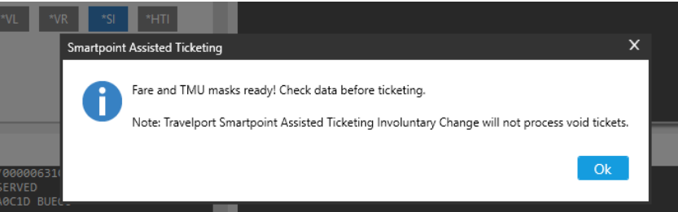
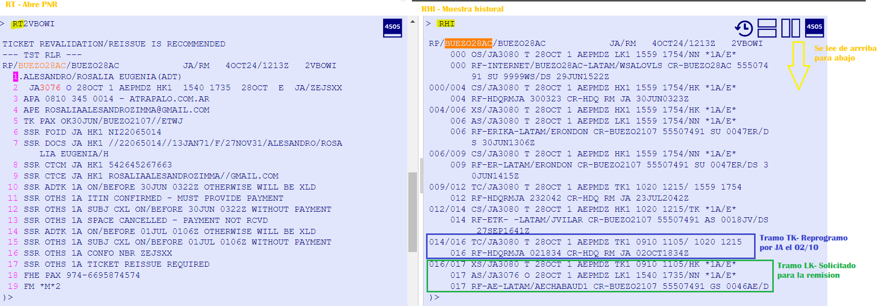

Desplegamos el itinerario y verificamos cambios en el historial

Es muy importante que verifiquen si aplica el cambio involuntario ya que cada aerolínea tiene sus condiciones.
Si corresponde el cambio NO ADC, tenemos que confirmar que los tramos estan ok en la cia y avanzar creando la máscara

En Galileo tenemos 3 maneras de crear la máscara: automatica, semiautomatica o manual
 Una vez que ingresamos el comando les va a arrojar la siguiente pantalla informando que la máscara fue realizada.

Una vez que ingresamos el comando les va a arrojar la siguiente pantalla informando que la máscara fue realizada.

 Este comando se debe ingresar por pasajero asi crea cada máscara.
Este comando se debe ingresar por pasajero asi crea cada máscara. 

Desplegamos itinerario y verificamos cambios en el historial

Desplegamos ticket original

Debido a que es un invol, no hay archivo tarifario creado. Vamos a crear la mascara manual

Vamos a cargar todos los componentes de la mascara


A diferencia de Galileo, aca debemos ingresar las tasas originales e indicarle a Amadeus que ya estan pagas

Una vez cargados los componentes firmamos y cerramos
Ahora cargamos los comandos necesarios para la remisión

Debemos indicar cual es el ticket que vamos a usar para la remisión

Ya con la confirmación con todos los componentes cargados en la máscara, pueden ingresar al comando de emisión.
TTP/TX/RT (Se emite por archivo tarifario)